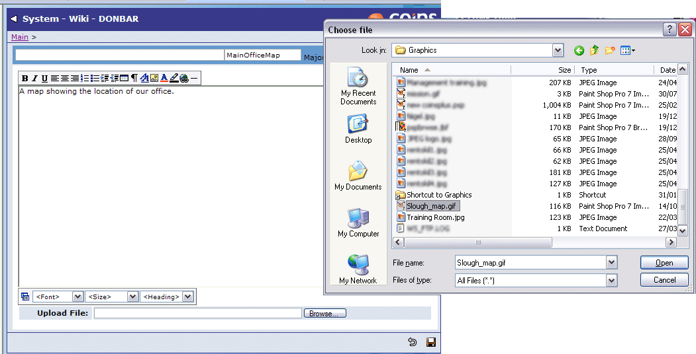

Attachments in a Wiki
You can add attachments, such as documents or image files, to a Wiki topic. A list of any attachments on a topic appears at the bottom of the topic.

To view attachments:
Either:
- Click the icon (for example, ) to display the attachment directly. You can also right-click the icon to save a copy of the attachment locally.
- Click the link to display any text that has been entered with the attachment. If the attachment is an image, displays the image as well. If the attachment is a document, you can click the icon in the title area to open it.

To add an attachment to a topic:
- Click the
 button at the bottom of the topic.
button at the bottom of the topic.
- Enter a WikiWords in the second field, to identify the attachment.
- If you want, enter some text about the attachment. This will be available for searching.
- Click Browse.
- Browse for the file you want to attach.

- enters the file name as a default title for the attachment - you can enter a different title if you want.
- Click
 .
.